Skosy
Mieszkanie / PoddaszeMieszkanie na poddaszu w Warszawie, gdzie skosy i nietypowa geometria stały się punktem wyjścia, a nie ograniczeniem projektu. Indywidualnie zaprojektowane meble i przemyślany układ funkcjonalny pozwoliły w pełni wykorzystać każdy metr nietypowej przestrzeni, zachowując jasny, kojący charakter wnętrza.

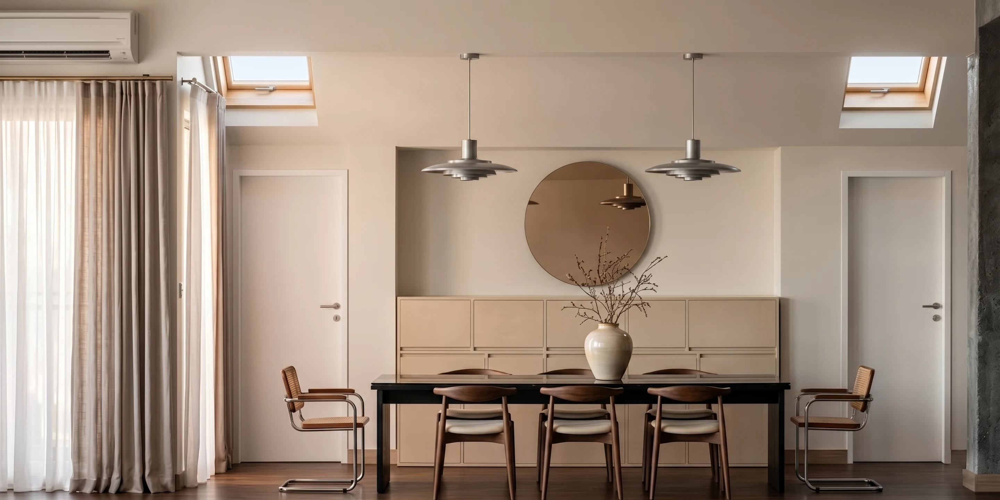
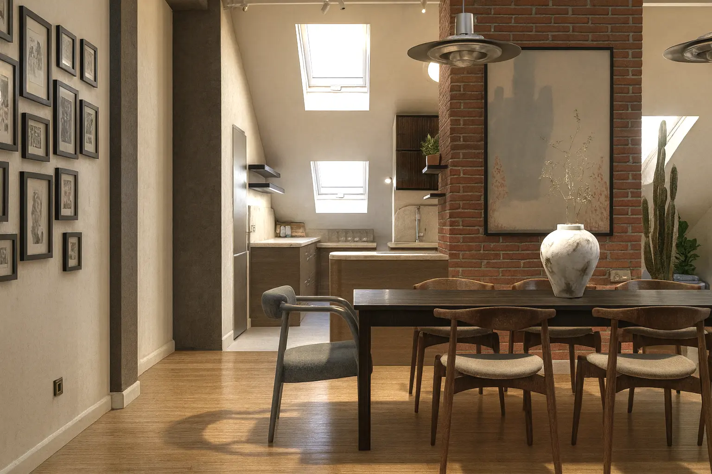
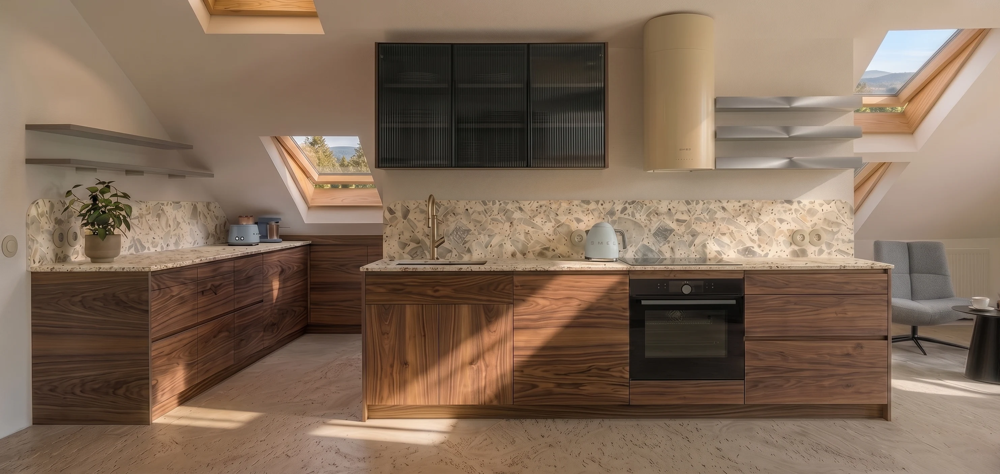
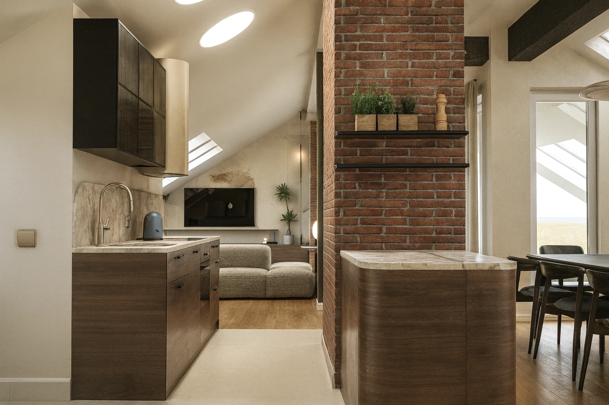
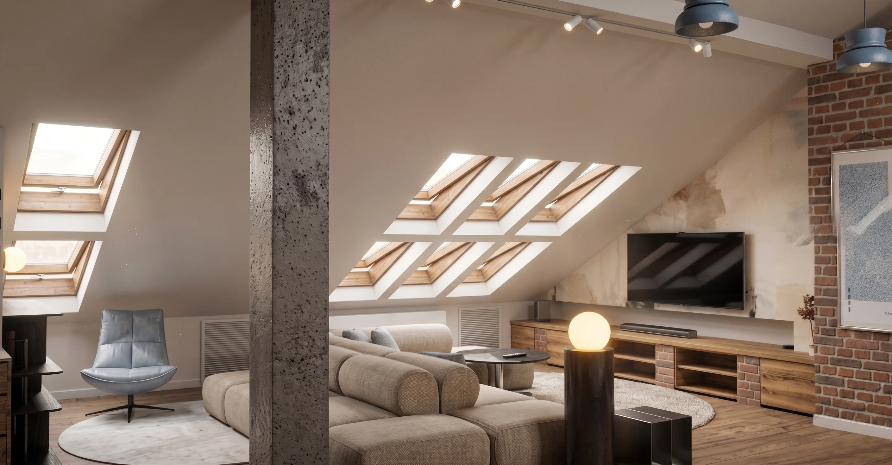
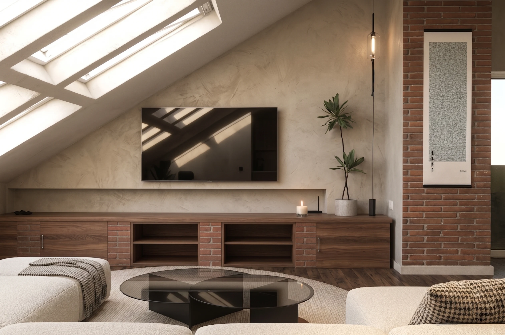
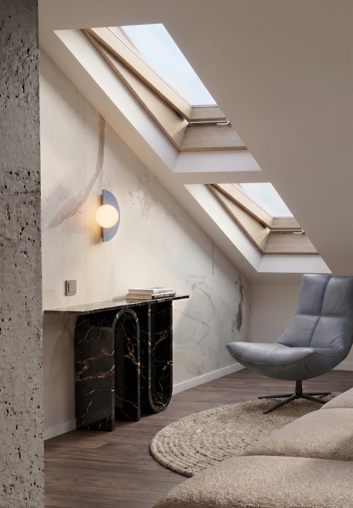
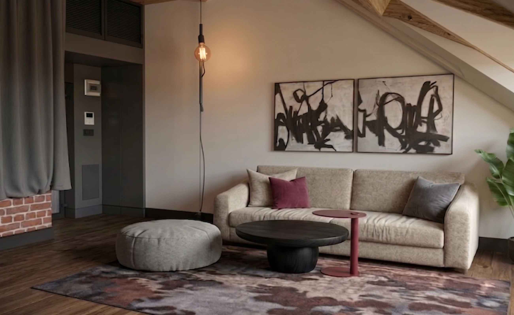
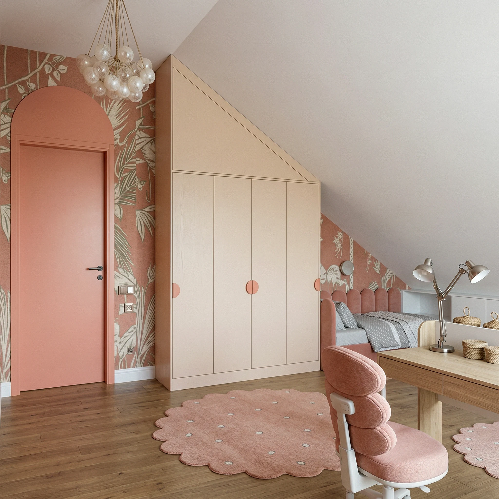
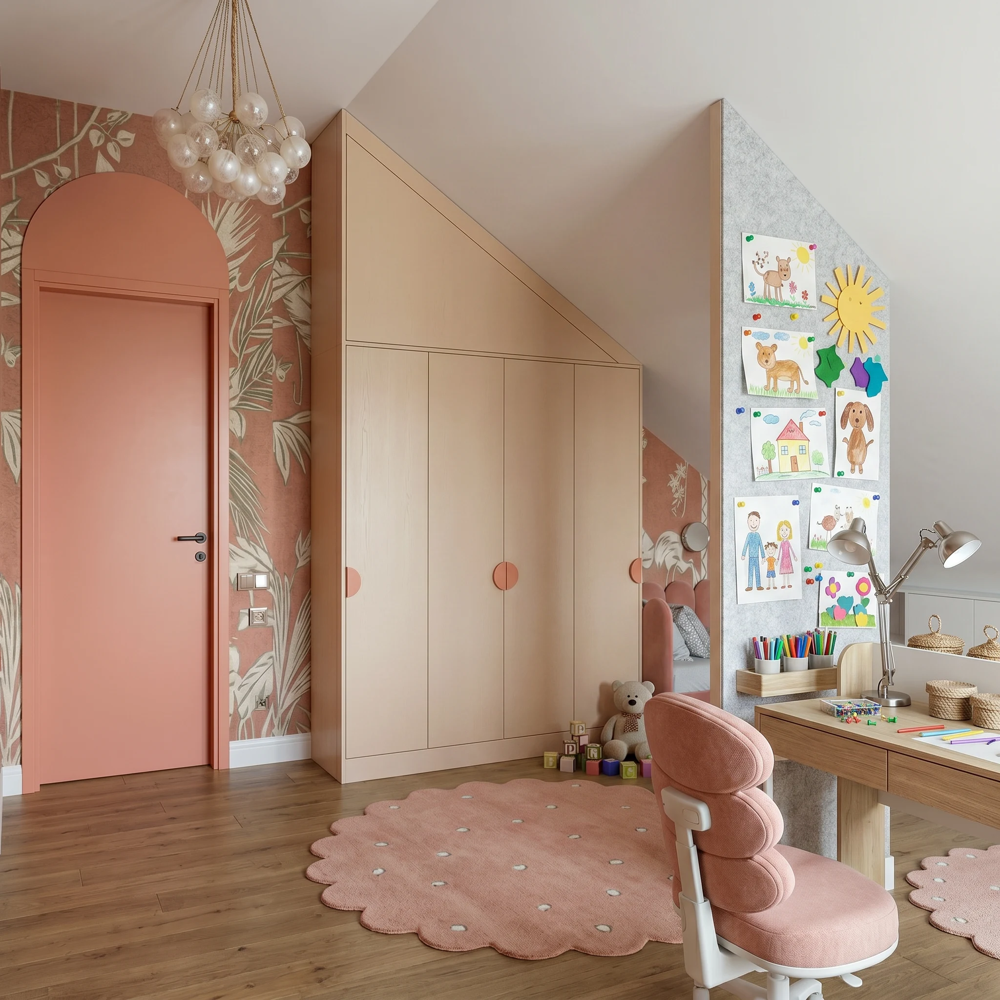
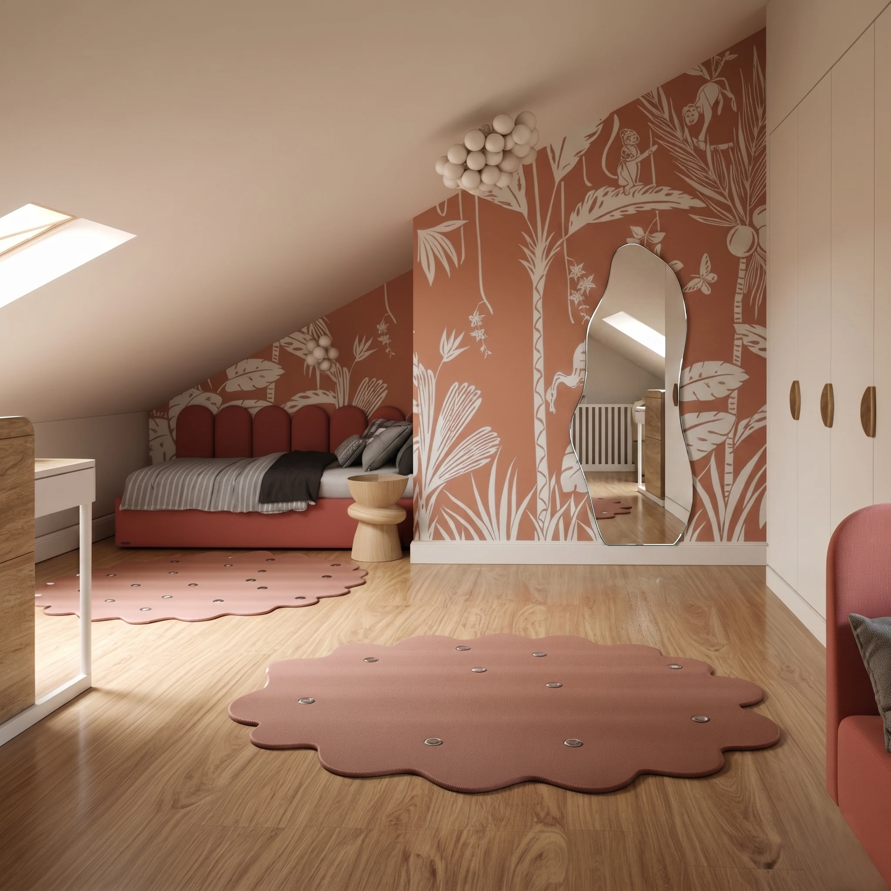
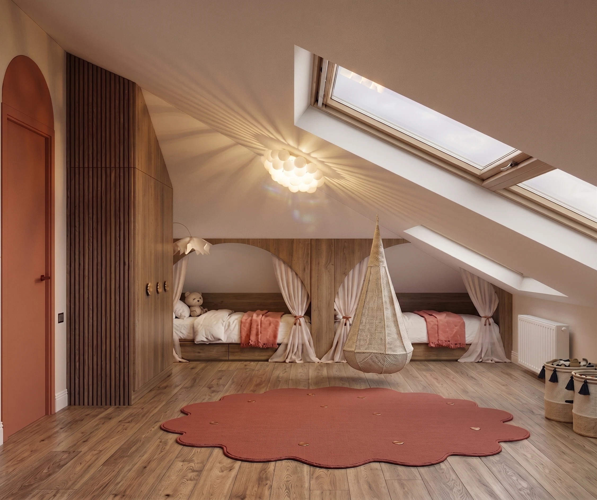
Marzy Ci się podobna metamorfoza?
Skontaktuj się